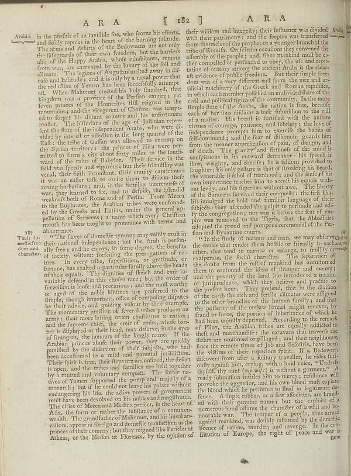

Scan ID britannica:309f765b1ecc83e0a7f7762e44b4a927a7555443:train:914
Image SHA-256 28ee06f6b377256adf9bf8eb6fc9e1be0c70622d782be5cea16690734b449399
Status: ok. Running header: A R A [ 182 ] A R A (catchword). Removed page furniture: Page-header: A R A [ 182 ] A R A.
PDF · raw Parse reply · LaTeX
Entries: E0072

| # | Class | Box | Parse 3.5 | Used text | Source |
|---|---|---|---|---|---|
| 1 | Caption | [0.0469, 0.4781, 0.1211, 0.5406] | 19? Thel of the native doom and character’s | 187 Their domestic doom and character. | super_vl |
| 2 | Text | [0.1016, 0.057, 0.5322, 0.4875] | in the purifit of an invitible foe, who forns his efforts, and fairly reposis in the heart of the burning follicle. The area and defines of the Bedowners are not only the disparard of their own freedom, but the barriers alio of the Huppy Arabia, whole hublishing, remains from way, we canvated by the leaves of the lid and climate. The regions of Angulfus meled away in difc eafe and lailitude; and it is only by a natural power that the reflection of Yemen has been facedtically attempt. ed. When Mahomer excited his holy fhandard, that Kingdom was a province of the Perian empire , yet few princes | in the pursuit of an invisible foe, who forms his efforts, and fairly reposes in the heart of the burning solitude. The arms and defarts of the Bedoweeens are not only the disparard of their own freedom, but the barriers alio of the Happy Arabia, whole hublishing, remains from way, we canvated by the leaves of the lid and climate. The regions of Angulfus meled away in disc ease and lailitude; and it is only by a natural power that the reflection of Yemen has been facedtically attempt. ed. When Mahomer excited his holy fhandard, that Kingdom was a province of the Perian empire , yet few princes | super_vl |
| 3 | Text | [0.1201, 0.4883, 0.5557, 0.9273] | "The flavors of domanticly tramway may vastly exist in their national independence / but the Arab is performally first; and he enjoys, in force degree, the benefits of society, without torturing the imperative of nature. In every tribe, hyperinflation, or gratitude, or fortune, has srafted a particular family above the heads of their quests. The disignified of flesh and enter invariably defend in this chlan race; but the order of facections lo bole and precarious ) and the molw worthy or aged of the noble human part preferred to the Temple, though important, offers of companding distures by th | The flavors of domestic tyranny may vastly exist in their national independence; but the Arab is formally free; and he enjoys, in some degree, the benefits of society, without forfeiting the prerogatives of nature. In every tribe, superflition, or gratitude, or fortune, has exalted a particular family above the heads of their equals. The dignities of sheich and emir invariably descend in this chosen race; but the order of succession is loose and precarious; and the most worthy or aged of the noble kinfmen are preferred to the simple, though important, office of complying disputes by their advi | super_vl |
| 4 | Text | [0.5234, 0.0539, 0.9521, 0.4852] | their wifidom and integrity; their influence was divided with their patrimony; and the fleepte was transferred from the nucleo of the prophet to a younger branch of the tribine of Koredik. Ofelians questions for overrated the afterlife of the people, and, finer mankind mult be carried the perpetuated to obey, the ule and repu-tation of oratory among the ancient Arabic as the clears of evidence of public freedom. But the simple tree-down was of a very different cult from the nice and artitilical machinery of the Greek and Roman republic, in which one member profiled as an individual there of th | their wisdom and integrity; their influence was divided with their patrimony; and the sceptre was transferred from the uncles of the prophet to a younger branch of the tribe of Koreish. On solemn occasions they convened the assembly of the people; and, since mankind must be either compelled or persuaded to obey, the use and reputation of oratory among the ancient Arabs is the clearest evidence of public freedom. But their simple freedom was of a very different cast from the nice and artificial machinery of the Greek and Roman republics, in which each member possessed an undivided share of the | super_vl |
| 5 | Text | [0.5498, 0.482, 0.9912, 0.9211] | "In the fluidy of nations and men, we may obectively the cutises the reader them hostile or friendly to each other, thus tend to narrow or enlarging to modify or cease, the focal character. The separation of the Arabia from the end of mankind has cautioned them to content of the ideas of Buranger and caseny; i and the poverty of the land has introduced a ramion of jurisprudence, which they believe and predicate to the preten hour. They pretend, that in the divilion of the earth the rich and fertile climates were aligned to the other branches of the humanity, and that the potifect of the cultur | In the study of nations and men, we may observe the causes that render them hostile or friendly to each other, that tend to narrow or enlarge, to mollify or exasperate, the social character. The separation of the Arabs from the rest of mankind has accustomed them to confound the ideas of stranger and enemy; and the poverty of the land has introduced a maxim of jurisprudence, which they believe and practise to the present hour. They pretend, that in the division of the earth the rich and fertile climates were assigned to the other branches of the human family; and that the poverty of the outlaw | super_vl |
Britannica scans: National Library of Scotland, CC0 1.0. Wikipedia text: Wikipedia contributors, CC BY-SA 4.0, revision links on each page. Generated 2026-10-18T13:26:14+00:00.